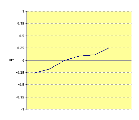
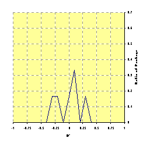
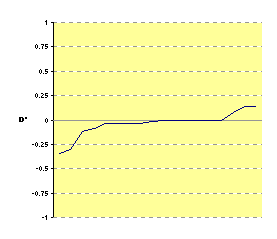
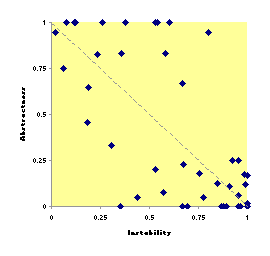
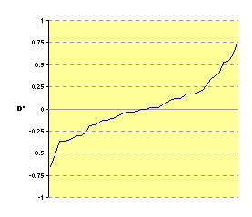
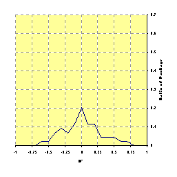
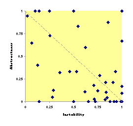
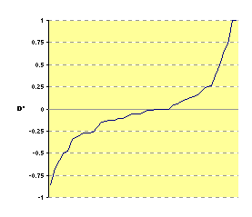

This is a quick analysis of A vs. I graphs for some of the software used in Dependency Finder. I took these graphs from Design Principles and Design Patterns by Robert C. Martin of Object Mentor, Inc. The idea is to plot the degree of abstractness of a package against how hard it is to change that package.
The X-axis charts instability, or a package's coupling. A low value mean that many other packages use the given package. Making changes to it could be hard if they must all be changed too. A high value means that only a few packages refer to it, if any. Making changes to it will be easy since they will have nowhere to trickle to.
The Y-axis charts abstractness, or a package's ratio of interfaces and abstract classes to concrete classes. A low values mean that there is very little abstraction. The classes are mostly concrete and the slightest modification in behavior requires to modify them. A high value means that the package is mostly interfaces that do not code any behavior but only protocol, which is much less subject to change.
Typically, you want to do two things. You want to group interfaces in
abstract package that control access to a component; they are the ones that
everybody refers to, and therefore A=1 and I=0. Then,
you want each component to have implementation packages hidden behind the
interface package, that nobody should refer to, yielding A=0 and
I=1.
In real life, packages are somewhere in between, hopefully on a straight
line between the two extremes. Robert C. Martin calls this line the main
sequence, in reference to astronomy, and D' is the normalized
distance between a given package and the main sequence. I can easily compute
it as D' = A + I - 1. A low value means that the package is
concrete (and subject to change) but hard to change because of the number of
external references to it. A high value means that the package is highly
abstract but not much used.
I collected the values for D' using OOMetrics
with the Martin configuration. I then used a special XSL stylesheet to extract
the values from the XML output and fed them to MS Excel. I used a simple Perl
script to compute the value distributions. It rounded each value of
D' to the nearest 0.1 increment and then couunted how many points
fell on each of the 21 target values. I normalized the values by dividing each
count by the total number of packages in a given piece of software so that we
can compare the distributions regardless of the size of the software under
inspection.
E.g.,
OOMetrics -configuration etc\MartinConfig.xml -csv -groups -out depfind lib\DependencyFinder.jar OOMetrics -configuration etc\MartinConfig.xml -xml -groups -out depfind lib\DependencyFinder.jar OOMetrics -configuration etc\MartinConfig.xml -csv -groups -out oro lib\jakarta-oro.jar OOMetrics -configuration etc\MartinConfig.xml -xml -groups -out oro lib\jakarta-oro.jar OOMetrics -configuration etc\MartinConfig.xml -csv -groups -out log4j lib\log4j.jar OOMetrics -configuration etc\MartinConfig.xml -xml -groups -out log4j lib\log4j.jar OOMetrics -configuration etc\MartinConfig.xml -csv -groups -out xerces lib\xmlParserAPIs.jar lib\xercesImpl.jar OOMetrics -configuration etc\MartinConfig.xml -xml -groups -out xerces lib\xmlParserAPIs.jar lib\xercesImpl.jar OOMetrics -configuration etc\MartinConfig.xml -csv -groups -out xalan lib\xml-apis.jar lib\xalan.jar OOMetrics -configuration etc\MartinConfig.xml -xml -groups -out xalan lib\xml-apis.jar lib\xalan.jar
The graphs below on the left show the A vs. I plottings. The center graphs
show the values of D' in sorted order. The graphs on the right
show the distribution of values of D' across the range -1 to 1.
The goal, here, is to keep the packages close to the main sequence and keep
values of D' as close to zero as possible. So from the center
graphs, this means keeping the extreme values close to the central axis. This
will translate into a large spike at 0, and short wings to each side, on the
distribution graph. Jakarta-ORO and Log4J are good examples of this.
| A vs. I Graph | D' | Distribution of D' | |
| Dependency Finder | |
|
|
| Jakarta-ORO | |
 |  |
| Log4J | |
 | |
| Xerces |  |  |  |
| Xalan |  |  | |
Finally, here is a summary view of all five codebases. The thin line shows
the full range of D' for that codebase. The large rectangle is
centered on the statistical mean and spreads each way by one standard deviation.
Statistically, 65% of all values should fall within the square. The column
below each range shows how many packages are in each codebase.
Final lesson: I guess Dependency Finder is not faring too badly. But for something so small, it could still have done better. :-)